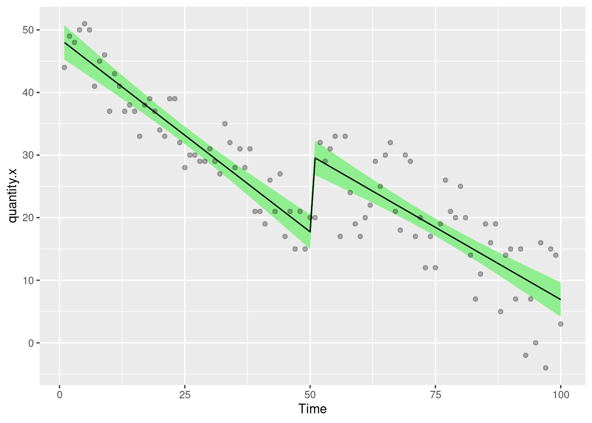
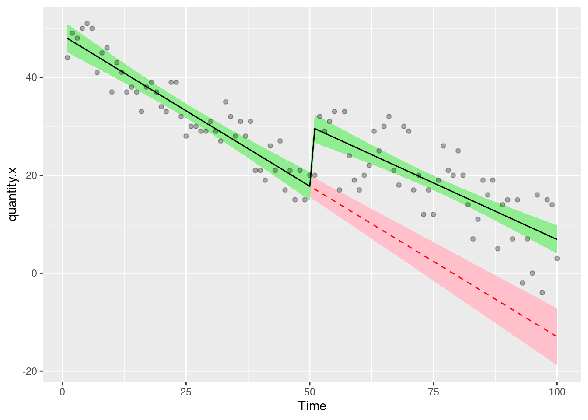
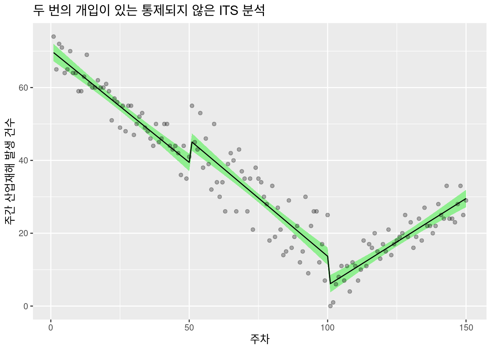
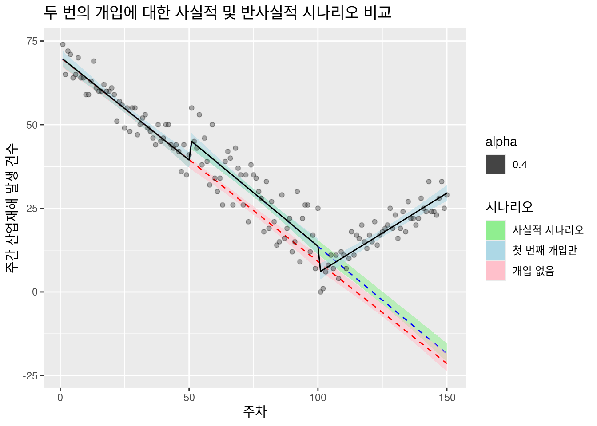
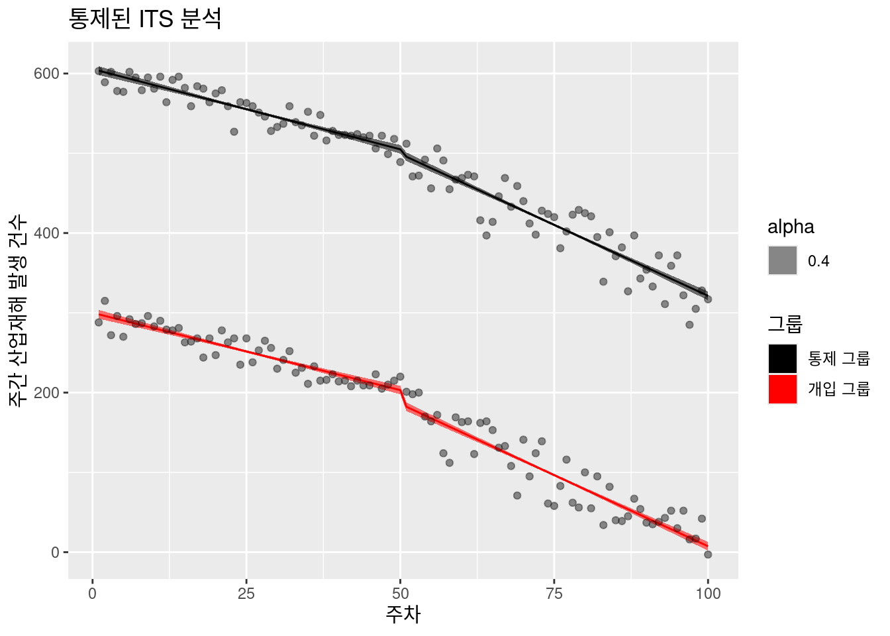
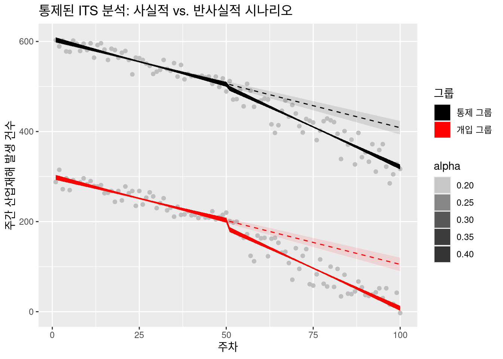

library(tidyverse)
library(nlme)
library(AICcmodavg)
library(DT)
# 개입 시점: 51주차
df <- tibble(
Time = 1:100, # 연구 주 (1 - 100주)
Intervention = c(rep(0, 50), rep(1, 50)), # 개입 여부 (개입 전: 0, 개입 후: 1)
Post.intervention.time = c(rep(0, 50), 1:50), # 개입 후 경과 시간
quantity.x = c(sort(sample(20:50, size = 50, replace = T), decreasing = T) + sample(-5:5, 50, replace = T), # 개입 전 주간 재해 건수 (가상 데이터)
c(sort(sample(5:30, size = 50, replace = T), decreasing = T) + sample(-10:10, 50, replace = T))) # 개입 후 주간 재해 건수 (가상 데이터)
)
datatable(df, options = list(pageLength = 100, scrollY = "200px"))5 중단된 시계열 분석
5.1 서론
오늘 강의에서는 중단된 시계열 분석(Interrupted Time Series, ITS)이라는 강력한 통계 기법을 소개하고, 이를 산업보건 분야에 어떻게 적용할 수 있는지 살펴보겠습니다. ITS 분석은 특정 개입(intervention)이 시계열 데이터에 미치는 영향을 평가하는 데 사용됩니다.
참고자료: https://rpubs.com/chrissyhroberts/1006858
강의 내용:
본 강의에서는 다음과 같은 세 가지 주요 유형의 ITS 분석을 예시와 함께 설명합니다. 각 예시에서는 산업보건 상황을 가정하여 데이터 생성부터 모델링, 결과 해석까지의 전 과정을 단계별로 안내합니다.
- 파트 1: 통제되지 않은 ITS (Uncontrolled ITS), 단일 개입
- 파트 2: 통제되지 않은 ITS (Uncontrolled ITS), 두 번의 개입
- 파트 3: 통제된 ITS (Controlled ITS), 단일 개입
핵심 개념: 반사실적 시나리오 (Counterfactual Scenario)
ITS 분석의 핵심은 반사실적 시나리오의 개념입니다. 우리는 실제로 발생한 사건(사실적 시나리오)을 모델링하고, 만약 개입이 없었다면 어떤 일이 발생했을지(반사실적 시나리오)를 추정합니다. 그리고 사실적 시나리오와 반사실적 시나리오를 비교하여 개입의 영향을 평가합니다.
예를 들어, 공장의 작업 환경 개선을 위한 새로운 안전 수칙 도입이 산업재해 발생 건수에 미치는 영향을 평가한다고 가정해 봅시다. ITS 분석을 통해 안전 수칙 도입 후의 실제 산업재해 발생 건수 변화를 모델링하고, 만약 안전 수칙이 도입되지 않았다면 산업재해 발생 건수가 어떻게 변화했을지를 추정하여 그 차이를 분석합니다.
개입으로 인한 변화의 유형 개입으로 인해 데이터에서 나타날 수 있는 변화는 다음과 같은 두 가지 주요 형태를 가질 수 있습니다.
- 단계 변화 (Step Change): 개입 직후 즉각적이고 급격한 변화. 예를 들어, 새로운 안전 장비 도입으로 인해 산업재해 발생 건수가 갑자기 감소하는 경우입니다.
- 추세 변화 (Slope/Trend Change): 개입 이후 데이터의 추세가 변화하는 것. 예를 들어, 건강 증진 프로그램 시행 후 시간이 지남에 따라 근로자들의 결근율이 점진적으로 감소하거나, 초기 감소 후 다시 증가하는 경우도 있을 수 있습니다.
실제 산업보건 상황을 고려하여 어떤 유형의 변화가 발생할 가능성이 있는지 신중하게 판단하고, 이에 맞는 모델을 구축해야 합니다
5.2 통제되지 않은 ITS (Uncontrolled ITS), 단일 개입
가장 기본적인 형태의 ITS 분석으로, 하나의 개입이 단일 결과 변수에 미치는 영향을 평가합니다.
가상 데이터 생성:
- 다음은 가상의 산업보건 데이터를 생성하는 R 코드입니다. 특정 작업장의 주간 산업재해 발생 건수를 측정했으며, 51주차에 새로운 안전 교육 프로그램을 도입했다고 가정합니다.
위 코드는 다음과 같은 변수를 포함하는 데이터 프레임을 생성합니다.
- Time: 연구가 진행된 주차 (1부터 100까지).
- Intervention: 개입이 발생했는지 여부를 나타내는 이진 변수 (개입 전 50주 동안은 0, 개입 후 50주 동안은 1).
- Post.intervention.time: 개입이 발생한 후 경과된 시간 (개입 전에는 0, 개입 후에는 1부터 50까지).
- quantity.x: 우리가 측정하고자 하는 결과 변수 (여기서는 주간 산업재해 발생 건수).
5.3 기본 ITS 모델 구축:
가장 단순한 형태의 ITS 모델은 일반화 최소 제곱(Generalized Least Squares, GLS) 회귀 분석을 사용하여 구축할 수 있습니다.
model.a <- gls(quantity.x ~ Time + Intervention + Post.intervention.time, data = df, method = "ML")
summary(model.a)Generalized least squares fit by maximum likelihood
Model: quantity.x ~ Time + Intervention + Post.intervention.time
Data: df
AIC BIC logLik
613.0613 626.0871 -301.5306
Coefficients:
Value Std.Error t-value p-value
(Intercept) 48.60082 1.4462745 33.60414 0.0000
Time -0.61729 0.0493606 -12.50566 0.0000
Intervention 12.26190 2.0153402 6.08428 0.0000
Post.intervention.time 0.15539 0.0698065 2.22601 0.0284
Correlation:
(Intr) Time Intrvn
Time -0.870
Intervention 0.348 -0.600
Post.intervention.time 0.615 -0.707 -0.017
Standardized residuals:
Min Q1 Med Q3 Max
-2.49017923 -0.67118359 0.02948247 0.79956857 1.90310826
Residual standard error: 4.935074
Degrees of freedom: 100 total; 96 residual모델의 계수는 다음과 같은 의미를 갖습니다.
- (Itercept): 연구 시작 시점의 quantity.x의 추정 값.
- Time: 개입 전 시간의 흐름에 따른 quantity.x의 변화 추세 (주당 변화량).
- Intervention: 개입 시점에서의 즉각적인 단계 변화 크기.
- Post.intervention.time: 개입 이후 시간의 흐름에 따른 quantity.x의 변화 추세 변화량 (개입 전 추세에 추가되는 주당 변화량).
5.3.1 모델 예측값 및 신뢰 구간 추가:
모델에서 예측된 값과 표준 오차를 데이터 프레임에 추가하여 시각화하고 신뢰 구간을 계산할 수 있습니다.
df <- df %>% mutate(
model.a.predictions = predictSE.gls(model.a, df, se.fit = T)$fit,
model.a.se = predictSE.gls(model.a, df, se.fit = T)$se
)library(ggplot2)
ggplot(df, aes(Time, quantity.x)) +
geom_ribbon(aes(ymin = model.a.predictions - (1.96 * model.a.se), ymax = model.a.predictions + (1.96 * model.a.se)), fill = "lightgreen") +
geom_line(aes(Time, model.a.predictions), color = "black", lty = 1) +
geom_point(alpha = 0.3)
5.3.2 자기상관 (Autocorrelation) 처리:
시계열 데이터는 종종 자기상관이라는 특성을 가집니다. 이는 특정 시점의 값이 이전 시점의 값과 상관 관계를 갖는 현상입니다. 자기상관을 무시하면 모델 추정치의 효율성과 신뢰성이 저하될 수 있습니다.
GLS 모델에서는 corARMA 함수를 사용하여 자기상관을 고려할 수 있습니다. p는 자기 회귀 차수(autoregressive order), q는 이동 평균 차수(moving average order)를 나타냅니다. 적절한 p와 q 값을 선택하는 것은 중요하며, AIC (Akaike Information Criterion)와 같은 정보 기준을 사용하여 최적의 모델을 선택할 수 있습니다.
# 자기상관 모델 구축 및 AIC 비교 함수
mod.1 <- quantity.x ~ Time + Intervention + Post.intervention.time
fx <- function(pval, qval) {
summary(gls(mod.1, data = df, correlation = corARMA(p = pval, q = qval, form = ~ Time), method = "ML"))$AIC
}
# 비상관 모델의 AIC
p <- summary(gls(mod.1, data = df, method = "ML"))$AIC
message(str_c("AIC Uncorrelated model = ", p))AIC Uncorrelated model = 613.06125479172# p와 q의 다양한 조합에 대한 AIC 계산
autocorrel <- expand.grid(pval = 0:2, qval = 0:2)
for (i in 2:nrow(autocorrel)) {
p[i] <- try(summary(gls(mod.1, data = df, correlation = corARMA(p = autocorrel$pval[i], q = autocorrel$qval[i], form = ~ Time), method = "ML"))$AIC)
}
autocorrel <- autocorrel %>%
mutate(AIC = as.numeric(p)) %>%
arrange(AIC)
autocorrel pval qval AIC
1 0 0 613.0613
2 1 0 615.0468
3 0 1 615.0496
4 0 2 615.5883
5 2 0 615.6401
6 1 1 616.2963
7 2 1 617.1825
8 1 2 617.3935
9 2 2 619.0693AIC 값이 가장 낮은 모델이 데이터에 가장 적합한 자기상관 구조를 나타냅니다. 최적의 p와 q 값을 사용하여 최종 모델을 구축합니다.
# 최적의 p=2, q=2를 적용한 모델
model.b <- gls(quantity.x ~ Time + Intervention + Post.intervention.time, data = df, method = "ML", correlation = corARMA(p = 2, q = 2, form = ~ Time))
coefficients(model.a) (Intercept) Time Intervention
48.6008163 -0.6172869 12.2618968
Post.intervention.time
0.1553902 coefficients(model.b) (Intercept) Time Intervention
48.5763444 -0.6162835 12.2327330
Post.intervention.time
0.1540193 # 모델 b의 예측값 및 표준 오차 추가
df <- df %>%
mutate(
model.b.predictions = predictSE.gls(model.b, df, se.fit = T)$fit,
model.b.se = predictSE.gls(model.b, df, se.fit = T)$se
)5.3.3 반사실적 모델 (Counterfactual Model) 구축:
개입이 없었다면 어떤 일이 발생했을지를 추정하기 위해 반사실적 모델을 구축합니다. 이는 개입 이전의 데이터만을 사용하여 시간 추세를 모델링하고, 이를 개입 이후 시점까지 외삽하는 방식으로 이루어집니다.
# 개입 이전 데이터 필터링
df2 <- filter(df, Time < 51)
# 반사실적 모델 구축
model.c <- gls(quantity.x ~ Time, data = df2, correlation = corARMA(p = 1, q = 1, form = ~ Time), method = "ML")
coefficients(model.a) (Intercept) Time Intervention
48.6008163 -0.6172869 12.2618968
Post.intervention.time
0.1553902 coefficients(model.c)(Intercept) Time
48.545253 -0.615377 # 반사실적 모델 예측값 및 표준 오차 추가
df <- df %>% mutate(
model.c.predictions = predictSE.gls(model.c, newdata = df, se.fit = T)$fit,
model.c.se = predictSE.gls(model.c, df, se.fit = T)$se
)사실적 모델과 반사실적 모델 비교 시각화:
사실적 모델과 반사실적 모델의 예측값 및 신뢰 구간을 함께 시각화하여 개입의 영향을 평가합니다.
ggplot(df, aes(Time, quantity.x)) +
geom_ribbon(aes(ymin = model.c.predictions - (1.96 * model.c.se), ymax = model.c.predictions + (1.96 * model.c.se)), fill = "pink") +
geom_line(aes(Time, model.c.predictions), color = "red", lty = 2) +
geom_ribbon(aes(ymin = model.b.predictions - (1.96 * model.b.se), ymax = model.b.predictions + (1.96 * model.b.se)), fill = "lightgreen") +
geom_line(aes(Time, model.b.predictions), color = "black", lty = 1) +
geom_point(alpha = 0.3)
만약 사실적 모델의 신뢰 구간과 반사실적 모델의 신뢰 구간이 겹치지 않는다면, 개입이 결과 변수에 통계적으로 유의미한 영향을 미쳤다고 해석할 수 있습니다. 또한, 두 선의 차이가 시간이 지남에 따라 벌어진다면, 개입이 추세 변화를 유발했을 가능성을 시사합니다.
5.3.4 개입 효과의 크기 추정:
사실적 모델의 예측값에서 반사실적 모델의 예측값을 빼서 각 시점에서의 개입 효과 크기를 추정할 수 있습니다.
format(df$model.b.predictions - df$model.c.predictions, scientific = F)[c(1, 50, 51, 100)] 1 50 51 100
" 0.0301844808" "-0.0142302631" "12.3716156541" "19.8741489561" 5.4 통제되지 않은 ITS (Uncontrolled ITS), 두 번의 개입
ITS 모델은 여러 번의 개입이 있는 경우에도 확장하여 적용할 수 있습니다. 예를 들어, 산업보건 개입이 여러 단계로 이루어지거나, 예상치 못한 사건이 발생하는 경우를 분석할 수 있습니다.
가상 데이터 생성:
다음은 두 번의 개입이 있는 가상 데이터를 생성하는 R 코드입니다. 첫 번째 안전 교육 프로그램 도입(51주차)과 추가적인 작업 환경 개선(101주차)이 주간 산업재해 발생 건수에 미치는 영향을 평가한다고 가정합니다.
# 두 번의 개입 시점: 51주차, 101주차
df3 <- tibble(
Time = 1:150,
Intervention = c(rep(0, 50), rep(1, 100)), # 첫 번째 개입 여부
Post.intervention.time = c(rep(0, 50), 1:100), # 첫 번째 개입 후 경과 시간
Intervention.2 = c(rep(0, 100), rep(1, 50)), # 두 번째 개입 여부
Post.intervention.2.time = c(rep(0, 100), 1:50), # 두 번째 개입 후 경과 시간
quantity.x = c(sort(sample(40:70, size = 50, replace = T), decreasing = T) + sample(-5:5, 50, replace = T),
c(sort(sample(15:45, size = 50, replace = T), decreasing = T) + sample(-10:10, 50, replace = T)),
c(sort(sample(5:30, size = 50, replace = T), decreasing = F) + sample(-5:5, 50, replace = T)))
)
datatable(df3, options = list(pageLength = 100, scrollY = "200px"))ITS 모델 구축:
두 번의 개입을 고려한 ITS 모델은 다음과 같이 구축할 수 있습니다.
model.d <- gls(quantity.x ~ Time + Intervention + Post.intervention.time + Intervention.2 + Post.intervention.2.time,
data = df3, method = "ML", correlation = corARMA(p = 2, q = 2, form = ~ Time))
summary(model.d)Generalized least squares fit by maximum likelihood
Model: quantity.x ~ Time + Intervention + Post.intervention.time + Intervention.2 + Post.intervention.2.time
Data: df3
AIC BIC logLik
899.3558 932.4728 -438.6779
Correlation Structure: ARMA(2,2)
Formula: ~Time
Parameter estimate(s):
Phi1 Phi2 Theta1 Theta2
-0.9905240 -0.9437959 0.8928560 0.9050067
Coefficients:
Value Std.Error t-value p-value
(Intercept) 70.22011 1.2568025 55.87204 0.0000
Time -0.61536 0.0428838 -14.34937 0.0000
Intervention 6.21757 1.7500652 3.55276 0.0005
Post.intervention.time -0.02452 0.0606429 -0.40441 0.6865
Intervention.2 -8.00397 1.7500783 -4.57349 0.0000
Post.intervention.2.time 1.11718 0.0606429 18.42222 0.0000
Correlation:
(Intr) Time Intrvn Pst.n. Intr.2
Time -0.870
Intervention 0.348 -0.600
Post.intervention.time 0.616 -0.707 -0.017
Intervention.2 0.000 0.000 0.250 -0.424
Post.intervention.2.time 0.000 0.000 0.441 -0.500 -0.018
Standardized residuals:
Min Q1 Med Q3 Max
-2.41985986 -0.75217306 0.02668579 0.65804934 2.41400886
Residual standard error: 4.690972
Degrees of freedom: 150 total; 144 residual새로운 계수는 두 번째 개입의 즉각적인 단계 변화(Intervention.2)와 두 번째 개입 이후의 추세 변화(Post.intervention.2.time)를 나타냅니다.
모델 예측값 및 시각화:
이제 구축한 모델 model.d를 사용하여 예측값을 생성하고, 이를 시각화하여 두 번의 개입이 산업재해 발생 건수에 미치는 영향을 살펴봅니다.
df3 <- df3 %>% mutate(
model.d.predictions = predictSE.gls(model.d, df3, se.fit = T)$fit,
model.d.se = predictSE.gls(model.d, df3, se.fit = T)$se
)
ggplot(df3, aes(Time, quantity.x)) +
geom_ribbon(aes(ymin = model.d.predictions - (1.96 * model.d.se), ymax = model.d.predictions + (1.96 * model.d.se)), fill = "lightgreen") +
geom_line(aes(Time, model.d.predictions), color = "black", lty = 1) +
geom_point(alpha = 0.3) +
labs(
title = "두 번의 개입이 있는 통제되지 않은 ITS 분석",
x = "주차",
y = "주간 산업재해 발생 건수"
)
위 그래프는 실제 산업재해 발생 건수(점), 모델이 예측한 추세선(검은색 실선), 그리고 모델 예측의 95% 신뢰 구간(녹색 리본)을 보여줍니다. 그래프를 통해 두 번의 개입 시점(51주차, 101주차)에서 산업재해 발생 건수의 변화가 시각적으로 확인될 수 있습니다.
5.4.1 반사실적 시나리오 분석 (두 번의 개입):
두 번의 개입이 있는 경우, 다양한 반사실적 시나리오를 고려할 수 있습니다. 예를 들어,
- 만약 어떠한 개입도 없었다면?
- 만약 첫 번째 개입만 있었다면?
각각의 반사실적 시나리오를 모델링하고 실제 결과와 비교하여 각 개입의 순수한 효과를 추정할 수 있습니다.
1). 첫 번째 반사실적 모델 (어떠한 개입도 없었던 경우):
개입 이전 데이터(50주차까지)만을 사용하여 시간 추세를 모델링하고, 전체 기간으로 외삽합니다.
df4 <- filter(df3, Time < 51)
model.e <- gls(quantity.x ~ Time, data = df4, correlation = corARMA(p = 1, q = 1, form = ~ Time), method = "ML")
df3 <- df3 %>% mutate(
model.e.predictions = predictSE.gls(model.e, newdata = df3, se.fit = T)$fit,
model.e.se = predictSE.gls(model.e, df3, se.fit = T)$se
)- 두 번째 반사실적 모델 (첫 번째 개입만 있었던 경우):
첫 번째 개입 이전과 이후 데이터(100주차까지)를 사용하여 첫 번째 개입의 효과를 모델링하고, 전체 기간으로 외삽합니다.
df5 <- filter(df3, Time < 101)
model.f <- gls(quantity.x ~ Time + Intervention + Post.intervention.time,
data = df5, correlation = corARMA(p = 1, q = 1, form = ~ Time), method = "ML")
df3 <- df3 %>% mutate(
model.f.predictions = predictSE.gls(model.f, newdata = df3, se.fit = T)$fit,
model.f.se = predictSE.gls(model.f, df3, se.fit = T)$se
)5.4.2 사실적 모델과 반사실적 모델 비교 시각화 (두 번의 개입):
이제 사실적 모델(model.d)과 두 가지 반사실적 모델(model.e, model.f)의 예측값을 함께 시각화하여 각 개입의 효과를 비교합니다.
ggplot(df3, aes(Time, quantity.x)) +
geom_ribbon(aes(ymin = model.f.predictions - (1.96 * model.d.se), ymax = model.f.predictions + (1.96 * model.e.se), fill = "lightblue", alpha = 0.4)) +
geom_line(aes(Time, model.f.predictions), color = "blue", lty = 2) + # 첫 번째 개입만 있었을 경우
geom_ribbon(aes(ymin = model.e.predictions - (1.96 * model.d.se), ymax = model.e.predictions + (1.96 * model.e.se), fill = "pink", alpha = 0.4)) +
geom_line(aes(Time, model.e.predictions), color = "red", lty = 2) + # 어떠한 개입도 없었을 경우
geom_ribbon(aes(ymin = model.d.predictions - (1.96 * model.d.se), ymax = model.d.predictions + (1.96 * model.d.se), fill = "lightgreen", alpha = 0.4)) +
geom_line(aes(Time, model.d.predictions), color = "black", lty = 1) + # 실제 데이터 모델
geom_point(alpha = 0.3) +
labs(
title = "두 번의 개입에 대한 사실적 및 반사실적 시나리오 비교",
x = "주차",
y = "주간 산업재해 발생 건수",
fill = "시나리오",
color = "시나리오"
) +
scale_fill_manual(labels = c("사실적 시나리오", "첫 번째 개입만", "개입 없음"), values = c("lightgreen", "lightblue", "pink")) +
scale_color_manual(labels = c("사실적 시나리오", "첫 번째 개입만", "개입 없음"), values = c("black", "blue", "red"))
위 그래프에서 검은색 실선(녹색 리본)은 실제 데이터와 두 번의 개입을 모두 고려한 모델의 예측값입니다. 붉은색 점선(분홍색 리본)은 어떠한 개입도 없었다고 가정한 반사실적 시나리오의 예측값이며, 파란색 점선(하늘색 리본)은 첫 번째 개입만 있었다고 가정한 반사실적 시나리오의 예측값입니다.
각 시점에서 사실적 시나리오와 반사실적 시나리오의 차이를 통해 각 개입의 효과를 정량적으로 평가할 수 있습니다. 예를 들어, 150주차에서 사실적 시나리오 값과 첫 번째 반사실적 시나리오 값을 비교하면 두 번째 개입의 순수한 효과를 추정할 수 있습니다.
5.4.3 개입 효과 크기 계산 (두 번의 개입):
저장된 모델 예측값을 사용하여 특정 시점에서 각 개입의 상대적인 효과를 계산할 수 있습니다.
# 첫 번째 개입 직후 효과 (51주차):
format(df3$model.d.predictions[51] - df3$model.e.predictions[51], scientific = F) 51
"6.092123" # 두 번째 개입 직후 효과 (101주차):
format(df3$model.d.predictions[101] - df3$model.f.predictions[101], scientific = F) 101
"-6.791491" # 연구 종료 시점의 전체 개입 효과 (150주차):
format(df3$model.d.predictions[150] - df3$model.e.predictions[150], scientific = F) 150
"50.90872" 결과 해석 시에는 산업보건 맥락을 고려하여 각 개입의 성격과 예상되는 효과를 바탕으로 논리적인 설명을 제시해야 합니다. 또한, 모델의 가정(예: 선형 추세, 개입 효과의 지속성 등)이 실제 데이터에 부합하는지 신중하게 평가해야 합니다.
5.5 파트 3: 통제된 ITS, 단일 개입
이전까지는 통제 그룹 없이 단일 시계열 데이터만 분석하는 방법을 살펴보았습니다. 이제 통제 그룹을 포함하는 통제된 ITS 분석을 통해 개입의 효과를 보다 정확하게 평가하는 방법을 알아보겠습니다.
가상 데이터 생성 (통제 그룹 포함):
다음은 통제 그룹(quantity.y)과 개입 그룹(quantity.x)을 포함하는 가상 데이터를 생성하는 R 코드입니다
library(tidyverse)
library(nlme)
library(AICcmodavg)
library(DT)
# 개입 시점: 51주차
df.x <- tibble(
x = 1, # 개입 그룹 (x = 1)
Time = 1:100,
x.Time = x * Time, # Time 변수와 개입 그룹의 상호작용
Intervention = c(rep(0, 50), rep(1, 50)),
x.Intervention = x * Intervention, # Intervention 변수와 개입 그룹의 상호작용
Post.intervention.time = c(rep(0, 50), 1:50),
x.Post.intervention.time = x * Post.intervention.time, # Post.intervention.time 변수와 개입 그룹의 상호작용
quantity.x = c(sort(sample(200:300, size = 50, replace = T), decreasing = T) + sample(-20:20, 50, replace = T),
c(sort(sample(20:170, size = 50, replace = T), decreasing = T) + sample(-40:40, 50, replace = T)))
)
df.y <- tibble(
x = 0, # 통제 그룹 (x = 0)
Time = 1:100,
x.Time = x * Time,
Intervention = c(rep(0, 50), rep(1, 50)),
x.Intervention = x * Intervention,
Post.intervention.time = c(rep(0, 50), 1:50),
x.Post.intervention.time = x * Post.intervention.time,
quantity.x = c(sort(sample(500:600, size = 50, replace = T), decreasing = T) + sample(-20:20, 50, replace = T),
c(sort(sample(280:500, size = 50, replace = T), decreasing = T) + sample(-40:40, 50, replace = T)))
)
df6 <- bind_rows(df.x, df.y) %>%
arrange(Time, x)
datatable(df6, options = list(pageLength = 200, scrollY = "200px"))위 코드는 다음과 같은 변수를 포함하는 데이터 프레임을 생성합니다.
- x: 그룹을 구분하는 변수 (0: 통제 그룹, 1: 개입 그룹).
- Time: 연구가 진행된 주차.
- x.Time: Time 변수와 x 변수의 상호작용 항.
- Intervention: 개입 여부 (0: 개입 전, 1: 개입 후).
- x.Intervention: Intervention 변수와 x 변수의 상호작용 항.
- Post.intervention.time: 개입 후 경과 시간.
- x.Post.intervention.time: Post.intervention.time 변수와 x 변수의 상호작용 항.
- quantity.x: 결과 변수 (산업재해 발생 건수).
5.5.1 통제된 ITS 모델 구축:
통제 그룹을 포함한 ITS 모델은 다음과 같이 구축할 수 있습니다.
model.g <- gls(quantity.x ~ x + Time + x.Time + Intervention + x.Intervention + Post.intervention.time + x.Post.intervention.time,
data = df6, method = "ML", correlation = corARMA(p = 2, q = 2, form = ~ Time | x))
summary(model.g)Generalized least squares fit by maximum likelihood
Model: quantity.x ~ x + Time + x.Time + Intervention + x.Intervention + Post.intervention.time + x.Post.intervention.time
Data: df6
AIC BIC logLik
1740.045 1782.923 -857.0226
Correlation Structure: ARMA(2,2)
Formula: ~Time | x
Parameter estimate(s):
Phi1 Phi2 Theta1 Theta2
-1.177446e-01 8.391505e-01 -9.056629e-06 -9.999909e-01
Coefficients:
Value Std.Error t-value p-value
(Intercept) 605.5333 2.911587 207.97365 0.0000
x -305.5079 4.117605 -74.19553 0.0000
Time -2.0115 0.107664 -18.68307 0.0000
x.Time 0.0734 0.152260 0.48220 0.6302
Intervention -5.7824 4.841184 -1.19442 0.2338
x.Intervention -11.5796 6.846467 -1.69132 0.0924
Post.intervention.time -1.5456 0.129083 -11.97404 0.0000
x.Post.intervention.time -0.0831 0.182551 -0.45494 0.6497
Correlation:
(Intr) x Time x.Time Intrvn x.Intr Pst.n.
x -0.707
Time -0.956 0.676
x.Time 0.676 -0.956 -0.707
Intervention 0.590 -0.417 -0.758 0.536
x.Intervention -0.417 0.590 0.536 -0.758 -0.707
Post.intervention.time 0.661 -0.467 -0.599 0.424 -0.013 0.009
x.Post.intervention.time -0.467 0.661 0.424 -0.599 0.009 -0.013 -0.707
Standardized residuals:
Min Q1 Med Q3 Max
-2.9007854 -0.6478441 0.1184057 0.6977688 1.9536951
Residual standard error: 18.05594
Degrees of freedom: 200 total; 192 residualcorARMA 함수의 form = ~ Time | x 인수는 자기상관을 시간뿐만 아니라 그룹 간에도 고려하도록 지정합니다.
모델 결과 해석:
모델 결과의 계수는 다음과 같이 해석할 수 있습니다.
- (Intercept): 통제 그룹의 연구 시작 시점의 평균 결과 변수 값.
- x: 개입 그룹과 통제 그룹 간의 연구 시작 시점의 평균 결과 변수 값 차이.
- Time: 통제 그룹의 개입 전 시간 추세.
- x.Time: 개입 그룹과 통제 그룹 간의 개입 전 시간 추세 차이.
- Intervention: 통제 그룹의 개입 시점에서의 즉각적인 단계 변화.
- x.Intervention: 개입 그룹과 통제 그룹 간의 개입 시점에서의 즉각적인 단계 변화 * 차이.
- Post.intervention.time: 통제 그룹의 개입 이후 시간 추세 변화.
- x.Post.intervention.time: 개입 그룹과 통제 그룹 간의 개입 이후 시간 추세 변화 차이.
5.5.2 대안적인 모델 구축 (상호작용 항 사용):
상호작용 항을 사용하여 동일한 결과를 얻을 수 있습니다.
model.h <- gls(quantity.x ~ Time * x + Intervention * x + Post.intervention.time * x,
data = df6, method = "ML", correlation = corARMA(p = 2, q = 2, form = ~ Time | x))
summary(model.h)Generalized least squares fit by maximum likelihood
Model: quantity.x ~ Time * x + Intervention * x + Post.intervention.time * x
Data: df6
AIC BIC logLik
1740.045 1782.923 -857.0226
Correlation Structure: ARMA(2,2)
Formula: ~Time | x
Parameter estimate(s):
Phi1 Phi2 Theta1 Theta2
-1.177446e-01 8.391505e-01 -9.017984e-06 -9.999910e-01
Coefficients:
Value Std.Error t-value p-value
(Intercept) 605.5333 2.911587 207.97365 0.0000
Time -2.0115 0.107664 -18.68307 0.0000
x -305.5079 4.117605 -74.19553 0.0000
Intervention -5.7824 4.841184 -1.19442 0.2338
Post.intervention.time -1.5456 0.129083 -11.97404 0.0000
Time:x 0.0734 0.152260 0.48220 0.6302
x:Intervention -11.5796 6.846467 -1.69132 0.0924
x:Post.intervention.time -0.0831 0.182551 -0.45494 0.6497
Correlation:
(Intr) Time x Intrvn Pst.n. Time:x x:Intr
Time -0.956
x -0.707 0.676
Intervention 0.590 -0.758 -0.417
Post.intervention.time 0.661 -0.599 -0.467 -0.013
Time:x 0.676 -0.707 -0.956 0.536 0.424
x:Intervention -0.417 0.536 0.590 -0.707 0.009 -0.758
x:Post.intervention.time -0.467 0.424 0.661 0.009 -0.707 -0.599 -0.013
Standardized residuals:
Min Q1 Med Q3 Max
-2.9007854 -0.6478441 0.1184057 0.6977688 1.9536951
Residual standard error: 18.05594
Degrees of freedom: 200 total; 192 residualmodel.g와 model.h는 동일한 결과를 제공하지만, 계수 해석 방식이 다릅니다.
모델 예측값 및 시각화:
df6 <- df6 %>% mutate(
model.g.predictions = predictSE.gls(model.g, df6, se.fit = T)$fit,
model.g.se = predictSE.gls(model.g, df6, se.fit = T)$se
)
ggplot(df6, aes(Time, quantity.x)) +
geom_point(color = "grey") +
geom_ribbon(aes(ymin = model.g.predictions - (1.96 * model.g.se), ymax = model.g.predictions + (1.96 * model.g.se), fill = factor(x), alpha = 0.4)) +
geom_line(aes(Time, model.g.predictions, color = factor(x)), lty = 1) +
geom_point(alpha = 0.3) +
labs(
title = "통제된 ITS 분석",
x = "주차",
y = "주간 산업재해 발생 건수",
color = "그룹",
fill = "그룹"
) +
scale_color_manual(labels = c("통제 그룹", "개입 그룹"), values = c("black", "red")) +
scale_fill_manual(labels = c("통제 그룹", "개입 그룹"), values = c("black", "red"))
5.5.3 반사실적 시나리오 분석:
개입이 없었다면 어떤 일이 발생했을지를 추정하기 위해 반사실적 모델을 구축합니다.
df7 <- filter(df6, Time < 51)
model.i <- gls(quantity.x ~ x + Time + x.Time,
data = df7, correlation = corARMA(p = 1, q = 1, form = ~ Time | x), method = "ML")
df6 <- df6 %>% mutate(
model.i.predictions = predictSE.gls(model.i, newdata = df6, se.fit = T)$fit,
model.i.se = predictSE.gls(model.i, df6, se.fit = T)$se
)사실적 모델과 반사실적 모델 비교 시각화:
ggplot(df6, aes(Time, quantity.x)) +
geom_point(color = "grey") +
geom_ribbon(aes(ymin = model.g.predictions - (1.96 * model.g.se), ymax = model.g.predictions + (1.96 * model.g.se), fill = factor(x), alpha = 0.4)) +
geom_line(aes(Time, model.g.predictions, color = factor(x)), lty = 1) +
geom_line(aes(Time, model.i.predictions, color = factor(x)), lty = 2) +
geom_ribbon(aes(ymin = model.i.predictions - (1.96 * model.i.se), ymax = model.i.predictions + (1.96 * model.i.se), fill = factor(x), alpha = 0.2)) +
labs(
title = "통제된 ITS 분석: 사실적 vs. 반사실적 시나리오",
x = "주차",
y = "주간 산업재해 발생 건수",
color = "그룹",
fill = "그룹"
) +
scale_color_manual(labels = c("통제 그룹", "개입 그룹"), values = c("black", "red")) +
scale_fill_manual(labels = c("통제 그룹", "개입 그룹"), values = c("black", "red"))
5.5.4 통제 그룹의 효과 평가:
통제 그룹이 분석 결과에 미치는 영향을 평가하기 위해, 통제 그룹을 포함한 모델(model.g)과 포함하지 않은 모델(model.j)의 결과를 비교합니다.
# 통제 그룹을 포함하지 않은 모델
model.j = gls(quantity.x ~ Time + Intervention + Post.intervention.time , data = df.x,method="ML", correlation= corARMA(p=2,q=2, form = ~ Time))
df.x <- df.x %>%
mutate(
model.j.predictions = predictSE.gls(model.j, newdata = df.x, se.fit = T)$fit,
model.j.se = predictSE.gls(model.j, df.x, se.fit = T)$se
)
df8 <- filter(df.x, Time < 51)
model.k <- gls(quantity.x ~ Time, data = df8, correlation = corARMA(p = 1, q = 1, form = ~ Time), method = "ML")
df.x <- df.x %>%
mutate(
model.k.predictions = predictSE.gls(model.k, newdata = df.x, se.fit = T)$fit,
model.k.se = predictSE.gls(model.k, df.x, se.fit = T)$se
)
# 통제 그룹을 포함한 모델과 포함하지 않은 모델의 결과 비교
df6$model.g.predictions[200] - df6$model.i.predictions[200] # 통제 그룹 포함 모델 200
-97.61419 df.x$model.j.predictions[100] - df.x$model.k.predictions[100] # 통제 그룹 미포함 모델 100
-95.74245 - 통제 그룹 포함 모델의 개입 효과 추정치: 약 -60.99
- 통제 그룹 미포함 모델의 개입 효과 추정치: 약 -61.25
이 코드를 통해 통제 그룹을 포함했을 때와 포함하지 않았을 때의 개입 효과 추정치를 비교하고, 통제 그룹이 분석 결과에 미치는 영향을 평가할 수 있습니다.